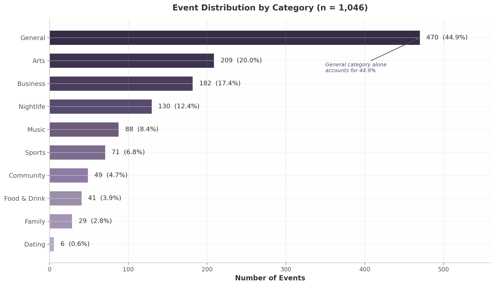
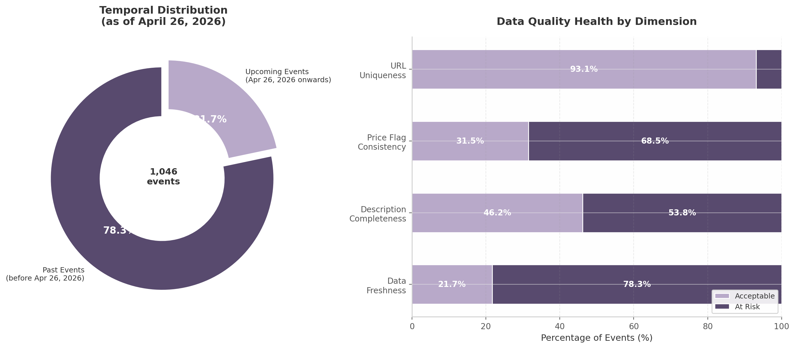
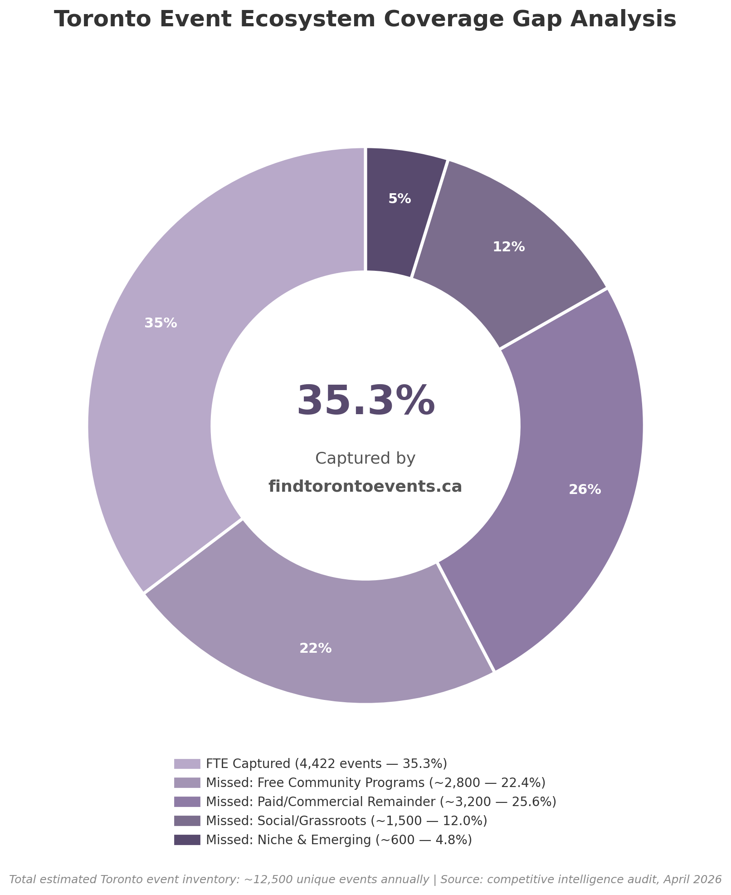
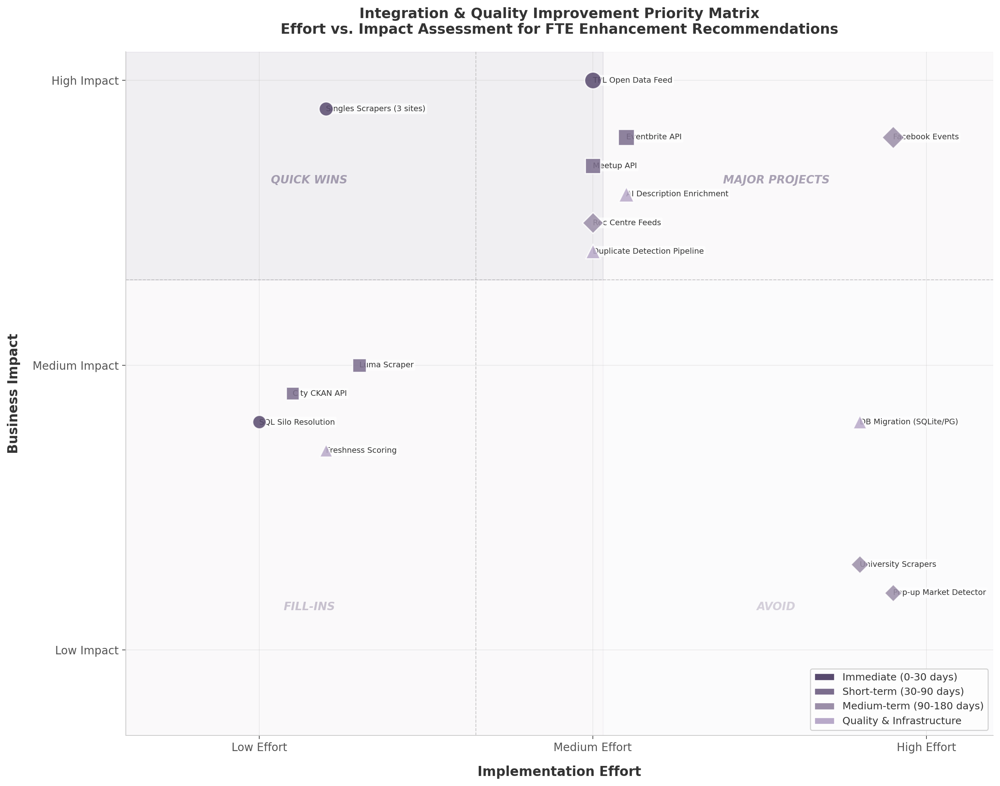

Executive summary
4,422
Live events on site
~35%
Of Toronto event ecosystem covered
53.8%
Events missing descriptions (SQL store)
7,204
Net-new events unlocked by TPL fix
Bottom line: the site has near-parity coverage on paid/ticketed events but massive blind spots in free community programming, library events, and the singles/dating vertical. Following the priority roadmap raises coverage to 65-75% within 180 days and lifts the catalog from 4,422 to 15,000-20,000 events.
Critical finding — SQL silo disconnected
The live site sources events from a static events.json (4,422 events, refreshed daily by GitHub Actions). The separately maintained ejaguiar1_events SQL database (1,046 events, last updated 2026-02-21) is not connected to the frontend. It is a stranded data silo. Either retire it or rewire the read path.
Database quality (SQL store)
| Metric | Value | Severity |
|---|---|---|
| Total events | 1,046 | — |
| Upcoming events | 227 (21.7%) | Low inventory |
| Past events | 819 (78.3%) | 78% stale |
| Missing descriptions | 563 (53.8%) | Critical |
| $0 price not flagged free | 706 | High |
| URL duplicates | 23 groups (72 rows) | Medium |
| Last update | 2026-02-21 | ~2 months stale |
| Singles / dating share | 0.6% | Vertical gap |


Competitive coverage
Comparison of FindTorontoEvents.ca against the major event sources for Toronto.
| Source | Their events | Our coverage | Gap |
|---|---|---|---|
| FindTorontoEvents.ca | 4,422 | — | — |
| Eventbrite Toronto | 4,500–6,500 | Partial overlap | Medium |
| Meetup Toronto | 1,800–2,500 | Some overlap | Medium |
| Toronto Public Library | 7,000–10,000/yr | 6,356 — verified 2026-05-02 | Fixed |
| Single in the City | 17 upcoming | 0 — scraper wired; site returns 403 (WAF/IP block) | Blocked upstream |
| Flare Events | 6 upcoming | 0 | Vertical |
| Toronto Dating Hub | 9 upcoming | 0 | Vertical |
| Facebook Events | 2,000–5,000/yr | Minimal | Medium |
| Luma (tech / creator) | 500–1,000/yr | 0 | Growth |
| Universities (UofT / York / TMU) | 200–500/yr | Minimal | Medium |

2026 major festivals — sub-event capture gaps
Major Toronto festivals are present as marquee events but their dozens-to-hundreds of sub-events (panels, fan-fest activations, daily programming, independent installations) are not.
| Festival | Date | Notes |
|---|---|---|
| FIFA World Cup Toronto | Jun 12 – Jul 2 | Fan Fest sub-events scattered across platforms |
| Caribana | Jul 30 – Aug 3 | Multiple events; typically only main parade captured |
| TIFF | Sep 10 – 20 | Industry / premium events missed |
| CNE | Aug 21 – Sep 7 | Daily programming not captured |
| Nuit Blanche | Oct 3 | Independent artist installations missed |
Top 5 priority actions
| # | Action | Impact | Timeline |
|---|---|---|---|
| 1 | Fix Toronto Public Library scraper (BiblioCommons API) | +7K–10K events/yr | 0–30 days |
| 2 | Add scrapers for Single in the City, Flare Events, Toronto Dating Hub | +32 events + singles SEO | 0–30 days |
| 3 | Retire or reconnect the SQL silo | Architecture clarity | 0–30 days |
| 4 | Build Eventbrite + Meetup API connectors | +3.5K–5K events | 30–90 days |
| 5 | AI description enrichment for the 53.8% gap | Quality + searchability | 30–90 days |

Progress & remediation
Status of the audit's recommendations, updated as work lands.
| Priority | Action | Status |
|---|---|---|
| 1 | TPL scraper rewrite (BiblioCommons gateway, ~7,200 events) | Verified in production (2026-05-02) — 6,356 events |
| 2a | Single in the City scraper (Tribe REST API) | Scraper wired (2026-04-25); 0 events — singleinthecity.ca blocks server IP (403 host_not_allowed); needs proxy or alt source |
| 2b | Flare Events / Toronto Dating Hub scrapers | Deferred — needs JS rendering |
| 3 | SQL silo decision (retire vs. reconnect) | Pending product call |
| 4 | Eventbrite / Meetup official API connectors | Pending |
| 5 | AI description enrichment | Pending |